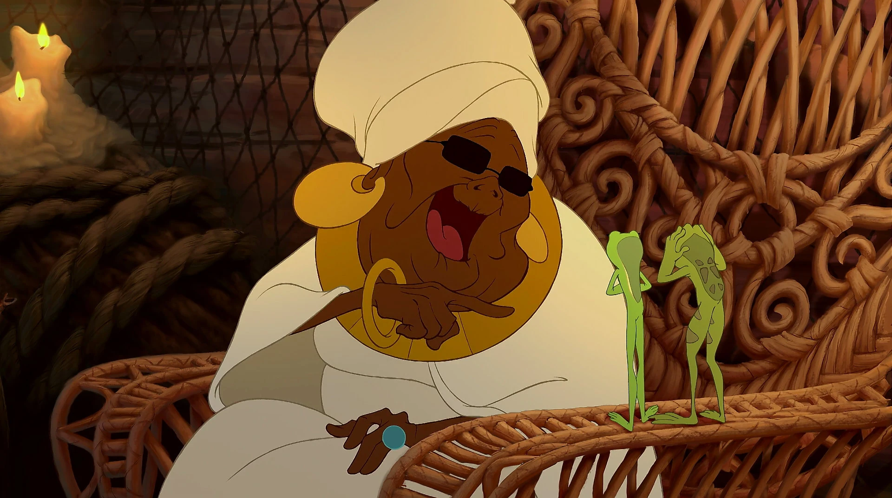
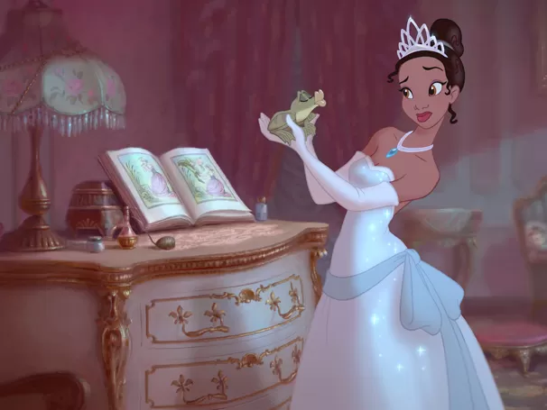
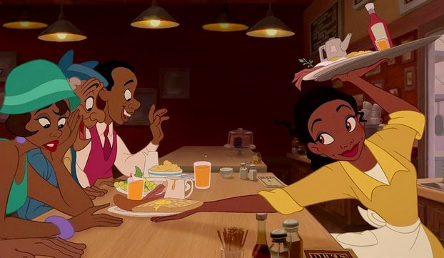
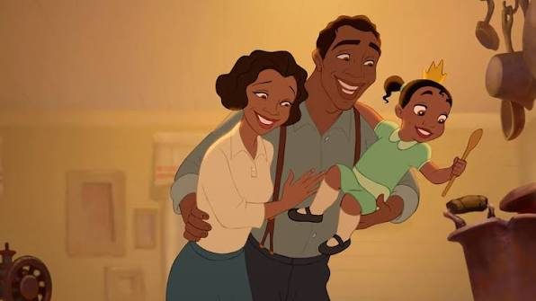
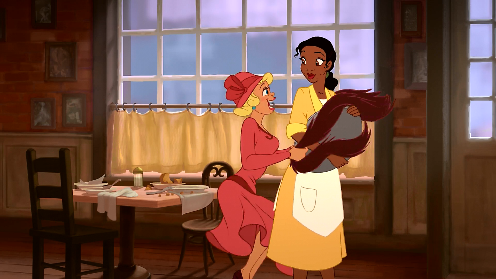
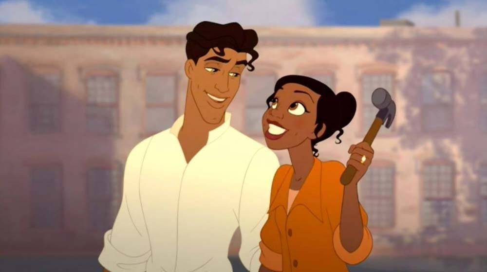
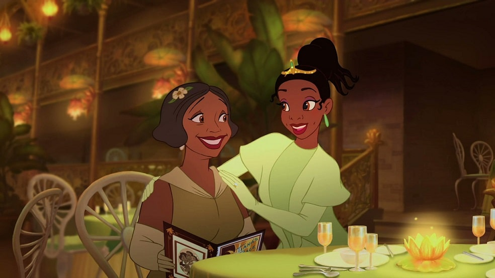
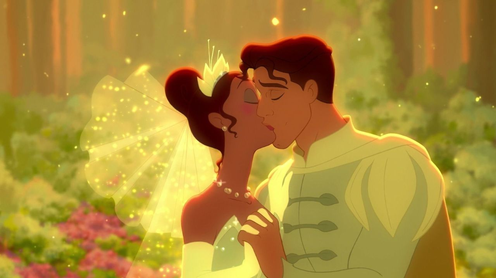

O sonho da Tiana era virar sapo

A Tiana sonhava em abrir seu próprio restaurante
O sonho da Tiana era virar sapo
A Tiana sonhava em abrir seu próprio restaurante

O Príncipe Naveen veio de um país rico chamado Maldonia para investir no restaurante da Tiana.

O Príncipe Naveen veio de Maldonia, mas foi deserdado pelos pais e estava totalmente falido.

A Tiana é a única Princesa da Disney que nasceu fazendo parte da realeza.

A Tiana é uma jovem trabalhadora que só se torna princesa ao se casar com o Príncipe Naveen.

O jacaré Louis tem o grande sonho de se tornar um cozinheiro profissional.

O jacaré Louis tem o grande sonho de tocar trompete em uma banda de jazz.

A Charlotte, melhor amiga da Tiana, faz de tudo para atrapalhar os planos dela por pura inveja.

A Charlotte é uma amiga muito leal que apoia a Tiana e até ajuda a financiar o restaurante.